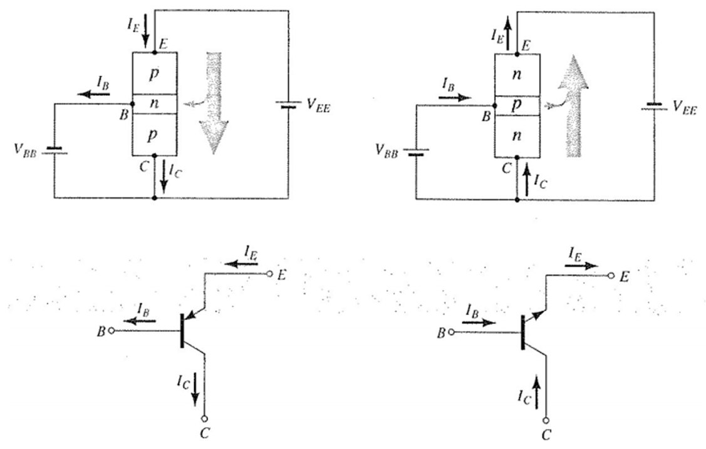

El transistor de unión bipolar (del inglés bipolar junction transistor, o sus siglas BJT) es un dispositivo electrónico de estado sólido consistente en dos uniones PN muy cercanas entre sí, que permite aumentar la corriente y disminuir el voltaje, además de controlar el paso de la corriente a través de sus terminales. La denominación de bipolar se debe a que la conducción tiene lugar gracias al desplazamiento de portadores de dos polaridades (huecos positivos y electrones negativos), y son de gran utilidad en gran número de aplicaciones; pero tienen ciertos inconvenientes, entre ellos su impedancia de entrada bastante baja.
Los transistores bipolares son los transistores más conocidos y se usan generalmente en electrónica analógica aunque también en algunas aplicaciones de electrónica digital, como la tecnología TTL o BICMOS.
Un transistor de unión bipolar está formado por dos Uniones PN en un solo cristal semiconductor, separados por una región muy estrecha. De esta manera quedan formadas tres regiones:
- Emisor, que se diferencia de las otras dos por estar fuertemente dopada, comportándose como un metal. Su nombre se debe a que esta terminal funciona como emisor de portadores de carga.
- Base, la intermedia, muy estrecha, que separa el emisor del colector.
- Colector, de extensión mucho mayor.
Construccion
- Dispositivo semiconductor de tres capas: dos de material tipo n y una tipo p,
llamado transistor npn; o dos de material tipo p y una de tipo n, llamado
transistor pnp.
- Las capas exteriores se denominan colector y emisor, la capa intermedia se
denomina base.
- La capa del emisor está muy dopada, la base ligeramente dopada y el
colector está un poco dopado.
Operación del BJT
- Se analizará el funcionamiento de un transistor pnp.
- La unión p-n de un transistor se polariza en inversa, mientras que la
otra se polariza en directa.
- Como el material de la base es muy delgado y su conductividad baja,
unos pocos portadores se irán en esa dirección. IB normalmente es
del orden de microamperes.
- La mayoría de los portadores mayoritarios se difundirá a través de la
unión polarizada en inversa hacia el material tipo p.
- En polarización inversa, los portadores mayoritarios inyectados
aparecerán como portadores minoritarios en el material tipo n.
- Todos los portadores minoritarios de la región de empobrecimiento
atravesarán la unión polarizada en inversa.
Base Común
- La base es común tanto para la entrada como para la salida de la
configuración.
- La flecha en el símbolo gráfico define la dirección de la corriente del
emisor (flujo convencional) a través del dispositivo.
Región del corte
- Las uniones base-emisor y colector-base se polarizan en inversa.
- La corriente del colector, así como la del emisor, es 0A.
Región de saturación
- Es la región de las características a la izquierda de cuando VCB = 0.
- Al incrementarse VCB hacia 0V hay un incremento exponencial en la
corriente del colector.
- Las uniones base-emisor y colector-base se polarizan en directa.
Alfa (α)
- En modo de cd de operación los niveles de IC e IE originados por los portadores mayoritarios están relacionados por una cantidad llamada
Emisor Común
La configuración de emisor común es la más usada. En él, el transistor actúa como un amplificador de la corriente y de la tensión. Aparte de los efectos de amplificación, también invierte la tensión de señal, es decir, si la tensión es tendente a positiva en la base pasa a ser tendente a negativa en el colector; pero, como estos efectos se producen con la corriente alterna.
El valor de la corriente de base va a depender del valor de la resistencia RB, la corriente que circula por el colector, IC, depende de la corriente de base, IB, como hemos visto con la formula IC = b . IB; IC es mucho más grande que IB y ese aumento viene dado por b , que es un parámetro característico del transistor.
Al pasar la corriente por RC se va a producir una caída de potencial; luego, la tensión que obtengamos a la salida, también va a depender del valor de esta resistencia. Podemos colocar una resistencia en el emisor, que llamaremos RE, que va a perjudicar mucho la amplificación de tensión, pero va a hacer que el transistor sea mucho más estable y no le afecten los cambios de la temperatura.
Colector Común
Se utiliza principalmente para acoplamiento de impedancias, ya que
tiene una alta impedancia de entrada y una baja de salida, lo
contrario de las configuraciones anteriores.

- La figura muestra una configuración de circuito de colector común.
- Se pueden diseñar utilizando las características de emisor común.
- Para fines prácticos, las características de salida son las mismas que
para la configuración de emisor común.
- Las características de salida se grafican como IE en función de VCE para un rango de valores de IB (la corriente de entrada por tanto será la misma).
- El eje horizontal se obtiene cambiando el signo del voltaje del
colector al emisor.
- El cambio de la escala vertical al reemplazar IC por IE será casi imperceptible ya que α ≈ 1.
Del circuito de arriba es fácil obtener la relación que existe entre la corriente de colector Ic y la
tensión colector-emisor VCE del transistor, aplicando la ley de Kirchoff resulta:
Vcc = VCE + IC . RC
Esta expresión se conoce como ecuación de la recta de carga. En ella Vcc y RC son constantes, y VCE e IC son las variables. La intersección entre esta recta de carga con la curva característica de salida del transistor determina el punto de reposo Q. Para trazar la recta en el plano IC = f (VCE) es suficiente con establecer los puntos de corte con los ejes de coordenadas. Cuando la corriente de colector es cero IC = 0, la tensión colector-emisor es igual al potencial
del generador VCE = Vcc:
IC = 0; VCE = Vcc
Por otro lado, cuando la tensión colector-emisor es igual a cero VCE = 0, la corriente de colector
vale el potencial del generador entre la resistencia de colector IC = Vcc/RC:
VCE = 0; IC = Vcc/RC
En la figura se muestra el circuito de polarización y la recta de carga estática con el punto
de reposo Q que representa la intersección de esta recta con la curva IB correspondiente.
El valor de la corriente de base IB se puede calcular aplicando la ley de Kirchoff al circuito de entrada o de base, así tenemos:
Vcc = VBE + IB . RB
Sabemos que el transistor entre base-emisor se comporta como un diodo, así que la tensión base-emisor para el silicio suele ser de 0,7 V, es decir:
VBE = 0,7 V
Entonces para un dado valor constante de la fuente de alimentación Vcc tenemos que la corriente de base solo depende de RB y vale:
IB = (Vcc – 0,7V)/ RB
Sabemos también que existe una relación entre las tres corrientes del transistor:
IC = β.IB
De la 2ª ley de Kirchoff:
IE = IC + IB = (β+1).IB
La ganancia de corriente del transistor para continua se conoce como β o hFE, y no tiene unidades ya que relaciona IC/IB.